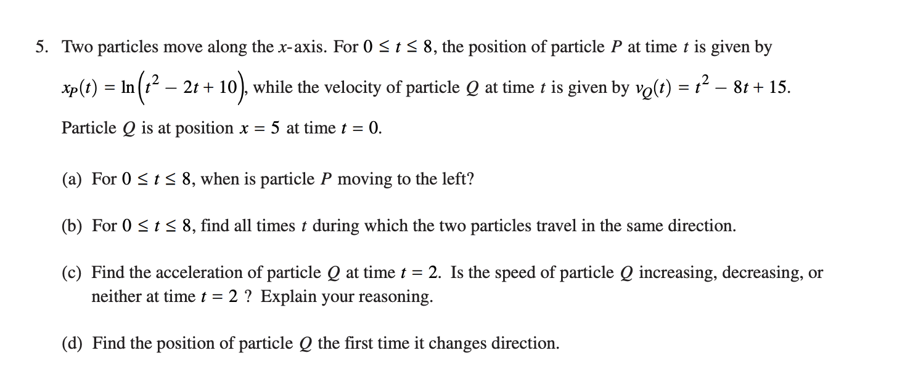

Using Derivatives to Find Maximum and Minimum Values¶
OBJECTIVES
Use Derivatives to find maximum and minimum values
Understand what a critical point is and how to find them.
Use first derivatives to explore behavior near critical points
Use second derivatives to determine nature of critical point
Review: Finding and Interpreting Derivatives¶
The problems below are meant to review our work finding derivatives of functions using rules and symbolic computer systems. In the questions below, your small group can use a table like that from OpenStax, use Wolfram Alpha, or the sympy library in Python to determine your derivatives as necessary.
import matplotlib.pyplot as plt
import numpy as np
import pandas as pd
import sympy as sy
from scipy.integrate import quad
PROBLEMS
Find an equation of the line tangent to the graph of \(f(x) = x(1 - 2x)^3\) at the point \((1, -1)\).
If \(f(x) = \sin(x)\) then \(f'(\frac{\pi}{3}) = \)?
If \(f(x) = \sqrt{2x}\) then \(f'(2)=\)?
A particle moves along the \(x\)-axis so that at any time \(t \geq 0\) its position is given by \(x(t) = t^3 - 3t^2 - 9t + 1\). For what values of \(t\) is the particle at rest?
The area of the region enclosed by the graphs of \(y = x\) and \(y = x^2 - 3x + 3\) is?
Review: Shapes of Graphs and Derivatives¶

Use what you know about finding derivatives to complete the following sentences:
If the function \(f\) is increasing its derivative \(f'\) is ______ ?
If the function \(f\) is decreasing its derivative \(f'\) is ______ ?
If a function \(f\) is concave up on some interval, it’s derivative \(f'\) is _________ ?
If a function \(f\) is concave down on some interval, it’s derivative \(f'\) is _________ ?
EXAMPLES
Use the function \(f'(x) = 3x^2 - 6x - 9\) to determine where the function \(f\) is increasing, decreasing, concave up, and concave down on the interval \([-4, 7]\).
For \(f(x) = x^3 + \frac{3}{2}x^2 + 18x\), find all intervals where \(f\) is concave up and all intervals where \(f\) is concave down.
Optimization and Extremum: Fermat’s Theorem¶

One way to state Fermat’s theorem is that, if a function has a local extremum at some point and is differentiable there, then the function’s derivative at that point must be zero. In precise mathematical language:
Let \({\displaystyle f\colon (a,b)\rightarrow \mathbb {R} }f\colon (a,b) \rightarrow \mathbb{R}\) be a function and suppose that \({\displaystyle x_{0}\in (a,b)}{\displaystyle x_{0}\in (a,b)}\) is a point where \({\displaystyle f}\) has a local extremum. If \(f\) is differentiable at \(\displaystyle x_{0}\), then \(f'(x_{0})=0\).
Critical Points¶
DEFINITION
When dealing with functions of a real variable, a critical point is a point in the domain of the function where the function is either not differentiable or the derivative is equal to zero.
Use the function \(f'(x) = 3x^2 - 6x - 9\) to determine critical points of \(f\).
For \(f(x) = x^3 + \frac{3}{2}x^2 + 18x\), find all critical points.
First Derivative to determine Maximum or Minimum¶
Find all critical points of \(f\).
Analyze the sign of \(f'\) on intervals determined by the critical points.
If \(f'\) goes from + to -, we have a maximum, from - to + we have a minimum, if the sign does not change we have neither.
Use our critical points from above to analyze the nature of the critical points.
from IPython.display import IFrame
IFrame(src = '', width = 300, height = 400)
PROBLEM
Use the first derivative test to find the location of all local extrema for:
\(f(x) = 5x^{1/3} - x^{5/3}\).
\(g(x) = \sqrt[3]{x-1}\)
from sympy.functions.elementary.miscellaneous import cbrt
def f(x): return 5*cbrt(x) - cbrt(x**5)
x = sy.Symbol('x')
sy.diff(f(x), x)
equation = sy.Eq(sy.diff(f(x), x), 0)
sy.solve(equation, x)
[-1, 1, -I, I]
def g(x): return cbrt(x-1)
sy.diff(g(x), x)
equation = sy.diff(g(x), x)
sy.solve(equation, x)
[]
Second Derivative Test¶
Suppose that we have a critical point \(x = c\). If:
\(f''(c) > 0\), then \(f\) has a local minimum at \(c\).
\(f''(c) < 0\), then \(f\) has a local maximum at \(c\).
\(f''(c) = 0\), then the test is inconclusive.
EXAMPLE
Use the second derivative to find the location of all local extrema for \(f(x) = x^5 - 5x^3\).
PROBLEM
AP Calculus Free-Response Question 2017 Problem 5.
